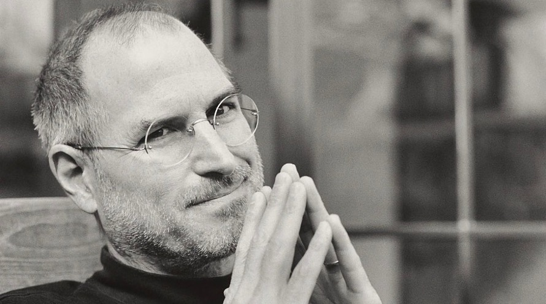

"Краще взяти і винайти завтрашній день, ніж переживати про те, що вчорашній був так собі"

Зміст
Сті́вен Пол Джобс (англ. Steven Paul Jobs, Steve Jobs) 24 лютого 1955, Сан-Франциско, Каліфорнія, США 5 жовтня 2011 — американський підприємець і винахідник. Був засновником, членом ради директорів і CEO (генеральним директором) корпорації Apple Inc.
Наприкінці 1970-х Джобс зі співзасновником компанії Apple Стівом Возняком створили один з перших комерційно успішних персональних комп'ютерів. На початку 1980-х Джобс був одним з перших, хто побачив потенціал керованого мишкою графічного інтерфейсу користувача, що призвело до створення Macintosh.
2001 року Джобс представив перший плеєр iPod. Через кілька років продаж iPod стає основним джерелом доходу компанії. Під керівництвом Джобса Apple суттєво зміцнила свої позиції на ринку персональних комп'ютерів. 2006 року компанія представила мережевий мультимедійний плеєр Apple TV, 2007 року почалися продажі мобільного телефону iPhone, 2008 року Стів продемонстрував найтонший ноутбук у світі, що має назву MacBook Air
